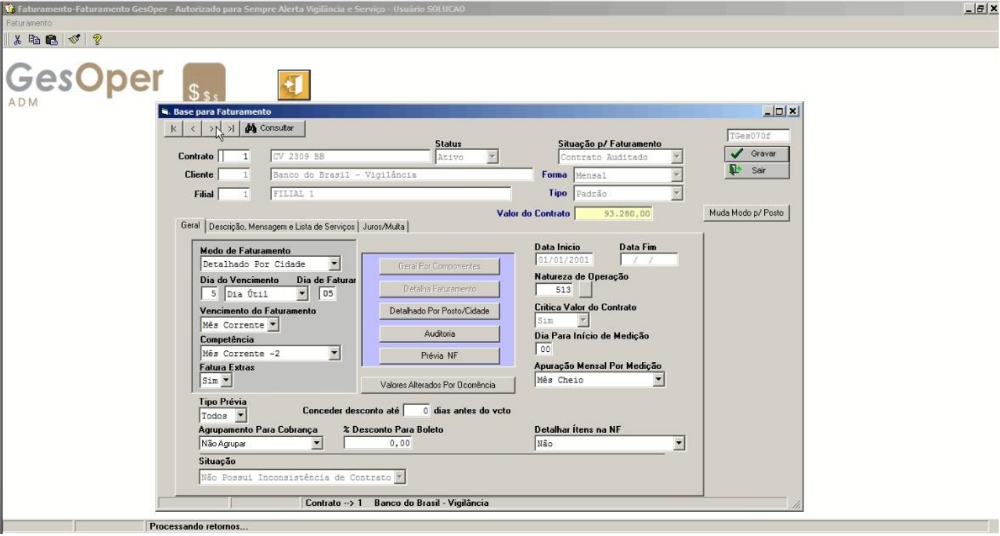

Base de Faturamento

🏷️ Base de Faturamento
Pode ser acessado pelo seguinte caminho: GesOper >> Financeiro >> Base de Faturamento
Visão Geral do Projeto
A Base de Faturamento é o local onde são feitas todas as configurações necessárias para auditar o contrato e gerar o movimento, emitir a nota fiscal (NFSe) e criar o título de contas a receber. Informações como valores dos serviços, valores/percentuais de impostos, data de vencimento, natureza da operação, entre outros, são informados na tela de contratos (ex.: "Contrato", "Cliente", "Filial", "Status", "Forma", "Tipo", "Valor do Contrato", "Data de Início").
- Configuração Flexível Suporta contratos mensais ou por hora, com detalhamento por contrato ou por posto/cidade.
- Modos de Faturamento Inclui opções como "Detalhado por Contrato", "Detalhado por Posto/Cidade", "Geral por Componentes" (em desuso) e "Não Faturar Este Contrato".
- Gerenciamento de Vencimentos O campo "Dia de Vencimento" permite configurar o dia de vencimento como "Dia Corrido", "Dia Útil" ou "Dia da Semana", ajustando automaticamente conforme o calendário.
Fluxo de Configuração
A base de faturamento suporta dois modos principais: "Detalhado por Contrato" (habilitado quando "Modo de Faturamento" é "Detalhado por Contrato") e "Detalhado por Posto/Cidade" (habilitado quando "Modo de Faturamento" é "Detalhado por Posto ou Por Cidade"). Outros modos, como "Geral por Componentes" (em desuso) e "Não Faturar Este Contrato", podem ser configurados conforme necessário.
Este campo é habilitado quando o "Modo de Faturamento" é "Detalhado por Contrato". Permite configurar serviços, impostos, valores e percentuais. Na tela "Serviços e Itens a Faturar", o "Cód / Cliente" preenche automaticamente o nome do cliente, com a opção de usar a tecla "F4" para selecionar no cadastro de clientes.
Habilitado quando o "Modo de Faturamento" é "Detalhado por Posto ou Cidade". Similar ao "Detalhado por Contrato", mas com ajustes nas telas para refletir a estrutura por posto ou cidade.
O campo "Tipo" pode ser configurado como "Per" (Percentual), permitindo ratear percentuais do valor total do contrato (ex.: 50% para Vigilância e 50% para outro componente, totalizando 100%). Alterações no valor do contrato são atualizadas automaticamente se configurado assim.
Funcionalidades Adicionais
- Prévia NF: Gera um relatório no formato de prévia com todas as informações da base e nota para conferência antes da emissão da NFSe.
- Valores Alterados por Ocorrência: Mostra ocorrências que alteram o valor do contrato (aumento ou diminuição), impactando o valor total a faturar.
- Situação: Indica inconsistências no contrato cadastrado no Operacional, bloqueando a auditoria até correção.
- Muda Modo de/Posto: Permite trocar o "Modo de Faturamento" para "Detalhado por Posto".
Benefícios Operacionais
⚡ Automação
Facilita a auditoria e emissão de notas com configurações centralizadas.
🎯 Flexibilidade
Adapta-se a diferentes tipos de contratos e modos de faturamento.
📊 Controle
Oferece visibilidade total dos dados de faturamento e vencimentos.